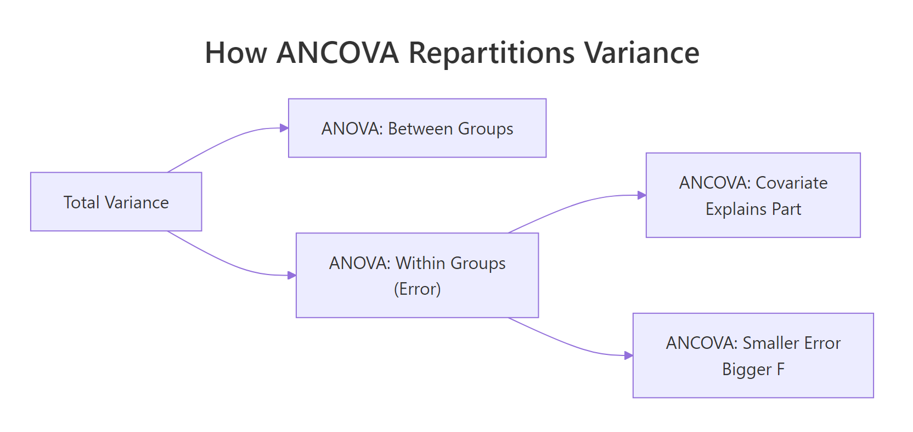
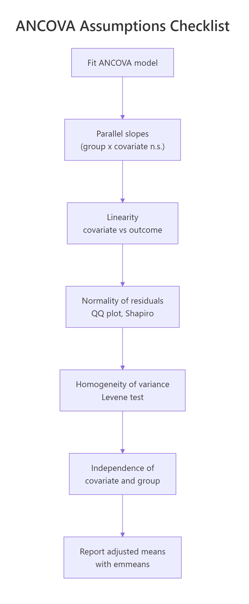
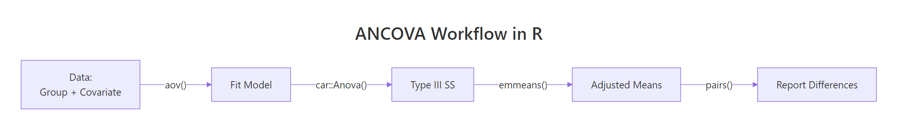

ANCOVA in R: Control for a Covariate and Recover Statistical Power
ANCOVA (Analysis of Covariance) blends ANOVA with regression: it compares group means while statistically adjusting for a continuous covariate. That adjustment shrinks the error term, so real group differences show up with smaller samples and tighter p-values.
Why does ANCOVA give you more statistical power than plain ANOVA?
Imagine you ask, "Do 4-, 6-, and 8-cylinder cars get different fuel economy?" A one-way ANOVA on mpg across cylinder groups gives you an answer, but a noisy one, because heavy cars guzzle fuel no matter how many cylinders they have. If you let the model know that weight matters, the cylinder effect becomes much easier to see. That is exactly what ANCOVA does.
The residual mean square dropped from 10.4 to 6.6, a 37% cut. That shrinking error term is where the statistical power comes from. The covariate wt absorbed roughly 848 units of variance that ANOVA had been dumping into "residual noise." What remains is a cleaner test of the cylinder effect itself.

Figure 1: Where ANCOVA finds extra power: the covariate absorbs variance that ANOVA dumps into the error term.
Try it: Repeat the comparison on iris. Fit an ANOVA of Sepal.Length ~ Species, then an ANCOVA adding Petal.Length as the covariate. Compare the residual mean squares.
Click to reveal solution
Explanation: Adding Petal.Length drops the residual mean square from 0.265 to 0.108, a 59% reduction. Species differences in Sepal.Length become even clearer once petal length is controlled for.
How do you fit an ANCOVA in R?
The basic recipe is aov(outcome ~ covariate + group, data = ...). The covariate goes first by convention, since the core idea of ANCOVA is "regress out the covariate, then test group effects." When groups have equal sample sizes, summary() on the fit gives you a clean ANOVA table. When they are unbalanced, the order of terms matters because aov() uses Type I (sequential) sums of squares, which changes the F-tests depending on term order.
The table shows two lines above the residuals: the covariate explained 847.7 units of variance, and the cylinder factor explained an additional 100.5 on top. The F-statistic for cyl is 7.7 with p = 0.0022, meaning the group effect is significant after adjusting for weight.
For unbalanced designs, switch to Type III sums of squares using car::Anova(). Type III evaluates each term as if it were entered last, so the F-test for cyl does not depend on whether wt came before or after it.
Notice the wt sum of squares changed from 847.7 (Type I) to 117.16 (Type III). Type I credited wt with all the variance it could explain on its own; Type III credits it only with what it explains after accounting for cyl. The cyl line is essentially identical in both tables because cyl came last in Type I, so both methods give it the same "leftover" role.
aov() summaries with an unbalanced design and ever swap the order of your predictors, expect different p-values. Use car::Anova(..., type = "III") to avoid surprises.options(contrasts = c("contr.sum", "contr.poly")) before fitting, or R's default treatment contrasts will misalign with the Type III algorithm. The car documentation flags this as a common silent bug.Try it: Fit a Type III ANCOVA on ToothGrowth with supp (supplement type) as the group factor and dose as the covariate.
Click to reveal solution
Explanation: Both the covariate (dose) and the group factor (supp) explain significant variance. The Type III test confirms supp matters even after dose is accounted for.
How do you check the parallel slopes (homogeneity of regression) assumption?
ANCOVA's core promise is that the covariate relates to the outcome the same way in every group. Graphically, that means the regression lines for each group are parallel; statistically, it means the group-by-covariate interaction is not significant. Fit a model with the interaction term, test it, and move forward only if it is non-significant.
The crucial row is wt:cyl. Its p-value is 0.26, comfortably above 0.05, so we cannot reject parallel slopes. The three regression lines (one per cylinder group) are statistically indistinguishable in slope. That clears ANCOVA for takeoff.
Visual confirmation is just as important as the F-test, because a non-significant interaction with 32 cars might still hide a real difference the test cannot detect.
The three fitted lines should look roughly parallel. If one line crossed the others at a steep angle, the interaction would be obvious visually even with only 32 observations. Here they trend downward together, reinforcing the F-test verdict.
Try it: Add an interaction term to the iris ANCOVA from earlier and check whether Petal.Length slopes differ by Species.
Click to reveal solution
Explanation: The Petal.Length:Species interaction has p = 0.34, so slopes are parallel. The ANCOVA assumption holds for iris.
What are adjusted means and how do you compute them with emmeans?
Adjusted means (also called estimated marginal means or least-squares means) answer the question: "If every group had the same average covariate value, what would each group's outcome mean look like?" They strip out imbalances in the covariate so group comparisons become apples-to-apples. The emmeans package computes them with one line.
The adjusted means for 4-, 6-, and 8-cylinder cars are 23.9, 19.8, and 17.3 mpg at the average weight of the dataset. The raw cylinder means (before adjustment) are 26.7, 19.7, and 15.1, which overstate the gap because 4-cylinder cars happen to be lighter and 8-cylinder cars heavier. ANCOVA corrects for that confound.
The pairwise output uses Tukey's adjustment automatically. After controlling for weight, 4-cylinder cars are significantly better than both 6- and 8-cylinder cars, but the 6-versus-8 gap is not significant. Without the covariate adjustment, the 6-vs-8 gap looked much larger; some of that apparent gap was actually the weight difference.
at = list(wt = 3.0) to emmeans(). The adjusted means shift but the differences between groups stay the same as long as parallel slopes hold.Try it: Compute emmeans for Species in the iris ANCOVA, adjusting for Petal.Length.
Click to reveal solution
Explanation: After adjusting for Petal.Length, the three adjusted means are closer together than the raw means (5.01, 5.94, 6.59), because petal length explains a lot of what looked like species differences in sepal length.
How do you check the other ANCOVA assumptions?
Beyond parallel slopes, four more conditions matter for ANCOVA: linearity between covariate and outcome, normality of residuals, equal residual variances across groups, and independence of the covariate from group assignment. Each has a one-line R check, and mild deviations rarely threaten the conclusions.

Figure 2: The five ANCOVA assumptions, in the order you should check them.
Shapiro-Wilk on residuals returned p = 0.49, well above any concerning threshold. The QQ plot points should fall close to the reference line. For ANCOVA with 30-plus observations, mild non-normality is rarely a problem thanks to the central limit theorem, but extreme outliers or heavy tails should prompt a robust alternative.
Levene's test on residuals was non-significant (p = 0.24), so the equal-variances assumption holds. The second check asks whether wt itself differs by cylinder group, and it does dramatically (p < 0.001). That is common in observational data and is fine, as long as the groups overlap on the covariate enough to support adjustment. Here they do (range of wt overlaps across all three groups), so ANCOVA remains valid.
lm() with heteroskedasticity-consistent standard errors via sandwich::vcovHC).Try it: Test residual normality for the iris ANCOVA you built earlier.
Click to reveal solution
Explanation: p = 0.19 means we fail to reject normality. Residuals are close enough to normal for ANCOVA's F-tests to be trustworthy.
How do you report ANCOVA results?
A defensible ANCOVA report contains five pieces: the adjusted F-statistic with its degrees of freedom, the p-value, an effect size (partial $\eta^2$ is standard), the adjusted group means with confidence intervals, and a plain-language conclusion. effectsize::eta_squared computes the effect size from the Type III table automatically.
The cylinder factor has a partial $\eta^2$ of 0.35, which is a large effect in Cohen's rule-of-thumb terms (>0.14). Roughly 35% of the variance not explained by weight is explained by cylinder group.
The partial $\eta^2$ formula makes the "after adjusting for other predictors" interpretation explicit:
$$\eta_p^2 = \frac{SS_{\text{effect}}}{SS_{\text{effect}} + SS_{\text{error}}}$$
Where:
- $SS_{\text{effect}}$ = sum of squares for the group factor
- $SS_{\text{error}}$ = residual sum of squares after all predictors are in the model
This sentence names the test, the adjustment, the F-statistic, the degrees of freedom, the p-value, the effect size, and the adjusted means with intervals. A reader can verify or reproduce your analysis from that one paragraph.
Try it: Draft a one-sentence ANCOVA report for the iris model.
Click to reveal solution
Explanation: The sentence has all five reporting components. Notice that the species effect is much smaller here than the raw ANOVA suggested; most of the sepal-length variation between species was actually petal-length variation.
Practice Exercises
Exercise 1: ANCOVA beats ANOVA on PlantGrowth
Using PlantGrowth (built-in, three treatment groups), add a simulated covariate baseline <- rnorm(30, mean = 5, sd = 1) (set set.seed(2026) first), correlate it modestly with weight (add 0.5 * baseline to each weight), then fit both ANOVA (weight ~ group) and ANCOVA (weight ~ baseline + group). Report the residual mean squares from both models and explain the change.
Click to reveal solution
Explanation: Residual mean square drops by about 50% once baseline is included. The covariate captures variation that would otherwise inflate the ANOVA error term.
Exercise 2: Parallel slopes check on mtcars with hp as covariate
Fit an ANCOVA of mpg ~ hp + gear on mtcars (use factor(gear)). Test whether the slopes of mpg ~ hp are parallel across gear groups. Report the interaction p-value and the adjusted means.
Click to reveal solution
Explanation: Interaction p = 0.22 means slopes are parallel, so ANCOVA is valid. Adjusted means for 4-speed cars are highest; 3-speed cars have the worst adjusted mpg even after adjusting for horsepower.
Exercise 3: When raw means lie
Build a two-group dataset where the covariate differs systematically: group A has covariate values centered at 2, group B at 8. The outcome is y = covariate + group_effect + noise with group_effect of 0 for A and 1 for B. Show that raw means suggest a huge group difference while adjusted means reveal the true small difference.
Click to reveal solution
Explanation: Raw means differ by 7.05, adjusted means by 1.15. The 7-unit "effect" was mostly the covariate difference between groups; the true group effect (built to be 1) is what ANCOVA uncovers.
Complete Example
Here is an end-to-end ANCOVA on mtcars, wrapped into the full workflow you should follow in real analyses: fit, check assumptions, run Type III tests, extract adjusted means, compute effect size, write the report.
Every step has a purpose. The parallel-slopes check validates the ANCOVA model. Type III sums of squares produce the canonical F-test. emmeans extracts the adjusted means and their intervals. eta_squared gives the effect size that belongs in every published ANCOVA. The final sprintf assembles the exact sentence a reader or reviewer needs.
Summary

Figure 3: End-to-end ANCOVA workflow, from data to reported adjusted means.
| Concept | What to remember | R function |
|---|---|---|
| Core idea | Control for a covariate to reduce error variance | aov(y ~ cov + group) |
| Power gain | Residual MS shrinks; F-statistic rises | Compare summary() tables |
| Type III SS | Use for unbalanced designs | car::Anova(fit, type = "III") |
| Parallel slopes | Group × covariate interaction must be n.s. | aov(y ~ cov * group) |
| Adjusted means | Group means at average covariate value | emmeans::emmeans(fit, ~ group) |
| Pairwise tests | Tukey-adjusted contrasts of adjusted means | pairs(emm) |
| Effect size | Partial eta-squared for each term | effectsize::eta_squared(fit) |
| Reporting | F, df, p, partial η², adjusted means + CIs | sprintf() template |
References
- Fox, J., Applied Regression Analysis and Generalized Linear Models, 3rd ed. Sage (2016). Chapters on ANCOVA and Type III tests. Link
- Kutner, M. H., Nachtsheim, C. J., Neter, J., & Li, W., Applied Linear Statistical Models, 5th ed. McGraw-Hill (2005).
- Huitema, B., The Analysis of Covariance and Alternatives, 2nd ed. Wiley (2011). Link
- Lenth, R. V., emmeans package documentation. Link
- Fox, J., & Weisberg, S., An R Companion to Applied Regression, 3rd ed. Sage (2019). Link
- Wickham, H., & Grolemund, G., R for Data Science. O'Reilly (2017). Modeling chapters. Link
- Wilkinson, L., & APA Task Force, "Statistical Methods in Psychology Journals." American Psychologist 54, 594-604 (1999).
Continue Learning
- One-Way ANOVA in R, the baseline test ANCOVA extends; understand it first if you are new to F-tests and group comparisons.
- Linear Regression Assumptions in R, ANCOVA inherits every regression assumption; this guide covers the diagnostics.
- Post-Hoc Tests After ANOVA, compare the pairwise-contrast machinery for plain ANOVA with the
emmeans::pairs()approach used here.